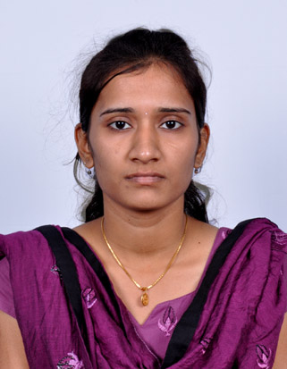

E-mail: savitak.022@gmail.com
Mobile: +91-9945328719
objectives
To acquire a position where I could leverage my capabilities for the organizational and personal development
EDUCATIONAL DETAILS
| Education |
Specialization |
Institute |
Year of passing |
Result |
| M. Tech |
Information Technology |
SDM CET, Dharwad |
2016 |
75% |
| BE |
Information Science |
SKSVMA CET, Laxmeshwar |
2014 |
61.55% |
| PUC |
Science |
JSS Sci. College, Dharwad |
2010 |
65% |
| SSLC / Class X |
|
KE Board’s, Dharwad |
2008 |
81.76% |
SKILL SET
Java, C, Mat lab, Python, My SQL, Oracle SQL
EXPERIENCE
6 months internship on “Social Media API Connector-Twitter” using Python language at Xenolytics, a New York based company
PROJECTS
Project 1
Image retrieval using color and texture features
Tools and technologies: Mat lab, Wang database
Description
The purpose of the project is to retrieve the images from a database using texture and color
features of an image. Features like Gray Level co-occurrence Matrix (GLCM) with color
features are extracted in RGB, HSV, and YcBcR color spaces. Images are retrieved using
similarity measures with the help of Euclidean, Manhattan and Canberra distances.
Project 2
Scalable and Secure Sharing of Personal Health Record in Cloud Computing using Attribute
based Encryption
Tools and technologies:
Apache tomcat 7, MySQL, Eclipse, Java 7, JSP, Servlets, HTML, JavaScript
Description
Personal Health Record (PHR) is an emerging patient-centric model of health information
exchange, which is often outsourced to be stored at a third party, such as cloud providers.
In this project, we proposed a novel patient-centric framework and a suite of mechanisms
for data access control to PHRs stored in semi-trusted servers. To achieve fine-grained and
scalable data access control for PHRs, we leverage Attribute Based Encryption (ABE)
techniques to encrypt each patient’s PHR file.
PRESENTATIONS
Presented a paper on “Texture Analysis and Extraction Techniques” for 5th National
Conference on Emerging & Innovative Trends in Computer Science (NCEITCS-2016), Vasavi
College of Engineering (Autonomous), Hyderabad-2016.
PERSONAL DETAILS
| Father’s name |
Laxmappa L Kamaladinni |
| Address |
#308, Sai Homes, Dwaraka Nagara, RR Nagar,
Bengaluru - 560098 |
| Date of Birth |
25-Sep-1992 |
| Marital Status |
Married |
| Gender |
Female |
| Languages Known |
English, Hindi and Kannada |
| Hobbies |
Painting, Listening music & playing games |